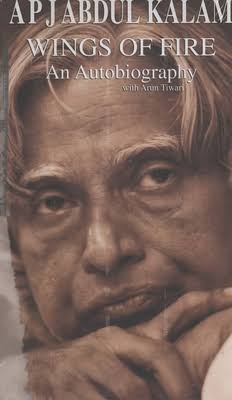
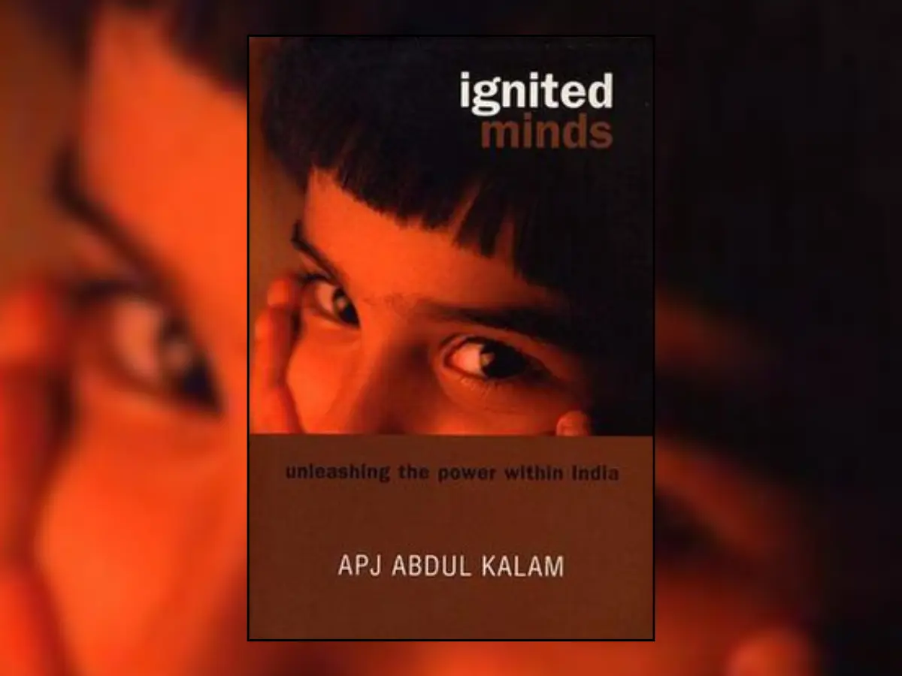
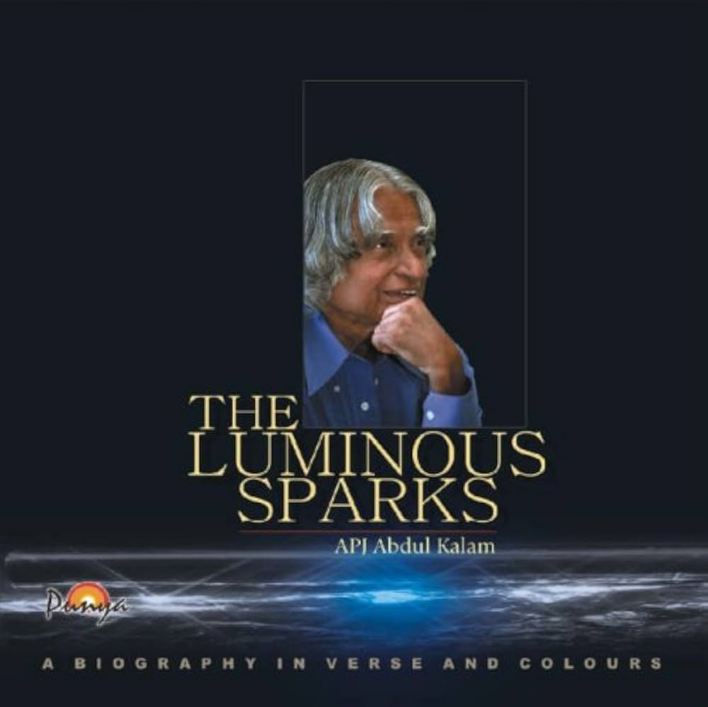
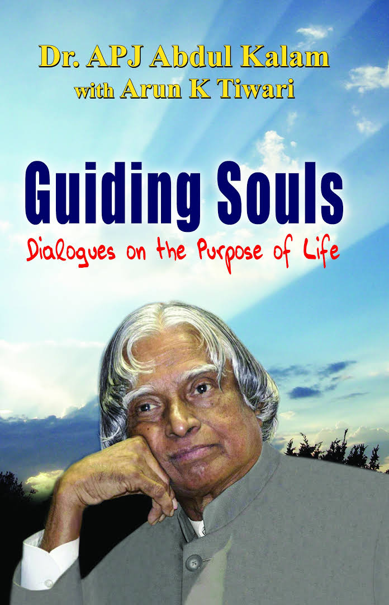
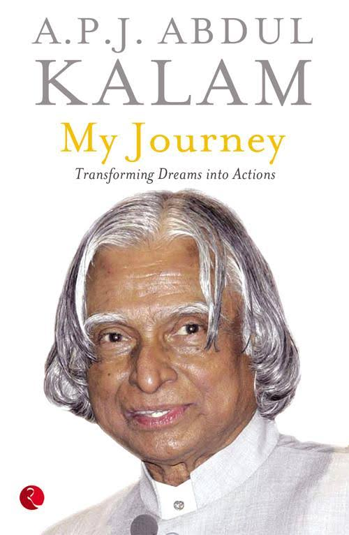
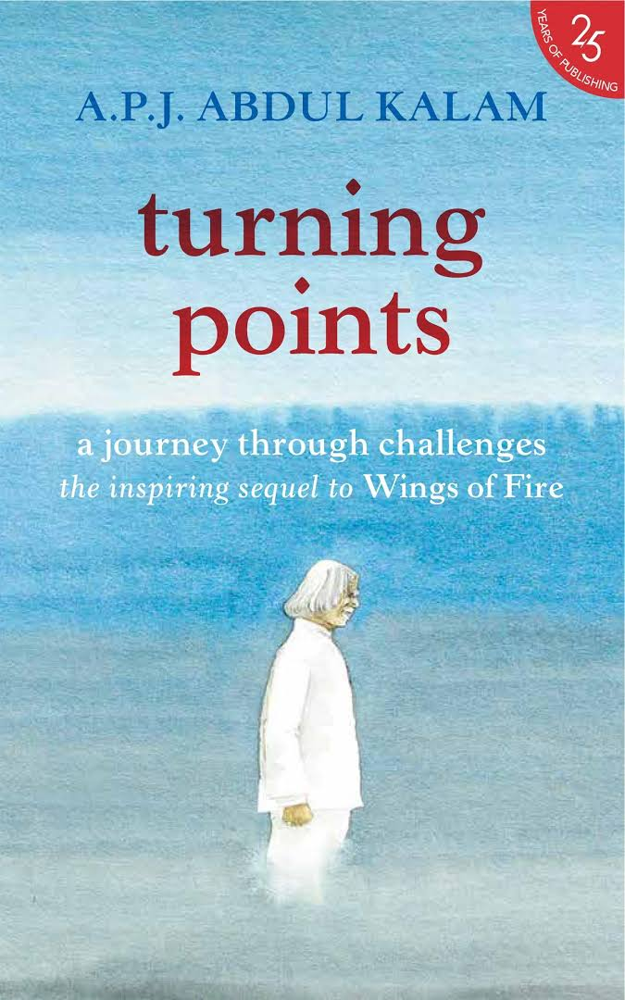

Dr. A.P.J. Abdul Kalam
"Missile Man" & 11th President of India
1931 – 2015 | People's President | Visionary Scientist
Dr. Avul Pakir Jainulabdeen Abdul Kalam was not just a scientist or a president; he was a true teacher and a source of inspiration for millions. Born in Rameswaram, he rose from humble beginnings to become the leading light of India's space and missile programs. His humility, vision, and connection with the common people, especially the youth, made him the 'People's President.'
Early Life: Born in Rameswaram, Tamil Nadu. Humble background
Education: Studied physics and aerospace engineering.
Core Identity: Role as scientist at ISRO and DRDO, contribution to nation.
1931: Birth in Rameswaram.
1954: Graduates in Physics from St. Joseph's College.
1955: Moves to Madras to study aerospace engineering.
1960: Joins DRDO as a scientist (later moves to ISRO).
1980: Successful launch of Rohini satellite (SLV-III).
1980s-90s: Develops Agni and Prithvi missiles.
1997: Awarded the Bharat Ratna.
1998: Key role in Pokhran-II nuclear tests.
2002: Elected as 11th President of India.
2015: Passes away at IIM Shillong.
Major Achievements
🏆 Bharat Ratna
1997 - India's highest civilian award
🚀 Missile Program
Agni, Prithvi, Akash, Trishul
📚 Author
"Wings of Fire", "Ignited Minds"
BOOKS





